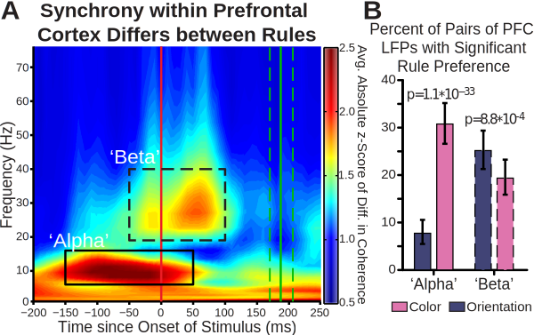

“Each of the objects and events we encounter in the environment affords a range of possible actions in response to it. The appropriate response varies as a function of the task”
Rule / Task Set
Cognitive Demand: The monitoring and allocation of control
Adjustments in control can occur rapidly. Reaction time and accuracy tend to change:
After errors
Repeating the same task
When switching between tasks
When responding to stimuli with more than response associated with them
Cognitive Demand: The monitoring and allocation of control
Prefrontal Cortex is important for monitoring and allocation of control
Perseverative behavior after injury
Task responsive neurons
Dynamics
Functional Organization of the Prefrontal Cortex
The problem of the ACC
Mixed selectivity
Outline
Task Switching Paradigm
Aim #1: LFP Analysis
Aim #2: Single Neuron and Population Analysis
NEW Aim #3: Tools for multi-dimensional investigation of electrophyisological datasets
Status of the Project
Task Switching Paradigm
Task Switching Paradigm
Task Switching Paradigm
Task Switching Paradigm
Factors that Affect the Amount of Attention Needed
Factors that Affect the Amount of Attention Needed
Factors that Affect the Amount of Attention Needed
All Factors that Affect Behavior
Aim #1
Rule-dependent networks in dlPFC

Analysis of ACC and dlPFC-ACC Synchrony
Aim #2
Motivation for Aim #2 and Aim #3
Tools for Investigating Multi-dimensional Models
SFN Poster Analysis and Problems
Proposed Corrections at Qualifying Exam
Current State: Proposed models
Aim #3
Interactive Visualizations
WHY: Statistical summaries can be misleading
(Visualizations help us check our assumptions)
WHY: We are collecting more data
More data → more complex theories → more comparisons
WHY: We are collecting more data
More data → more complex theories → more comparisons
Multidimensional data requires multiple views and summaries to fully understand
WHY: We are collecting more data
More data → more complex theories → more comparisons
Multidimensional data requires multiple views and summaries to fully understand
Harder to display all the data on a single static figure
WHY: We are collecting more data
More data → more complex theories → more comparisons
Multidimensional data requires multiple views and summaries to fully understand
Harder to display all the data on a single static figure
Examining raw data becomes more difficult
“…to convey the richness of the data stories we are telling rather than simplifying them”
Interactive visualizations can help us quickly make comparisons and deal with complexity
Heer & Shneiderman (2012)
Dynamic visualizations, when combined with interactivity, can help us understand complex data by preserving relationships between data
Web-enabled visualizations are familiar, easily shareable, and enable analysis transparency